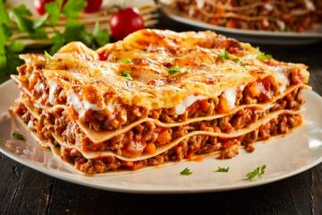

| Foto ilustrativa |
Data |
Prato |
Descrição |
 |
Segunda-feira |
Feijoada |
Um prato típico brasileiro, composto por feijão preto cozido com carnes defumadas, como costelinha e linguiça, servido com arroz, couve e laranja. Uma refeição completa e saborosa. |
 |
Terça-feira |
Estrogonofe |
Carne bovina em tiras, cozida em um molho cremoso de creme de leite e cogumelos. Um clássico que agrada a todos. |
|
Quarta-feira |
Pizza Margherita |
Massa crocante coberta com molho de tomate fresco, mussarela e manjericão. Uma pizza simples e deliciosa que celebra os sabores tradicionais da Itália. |
 |
Quinta-feira |
Risoto de Cogumelos |
Arroz arbóreo cremoso preparado com uma variedade de cogumelos salteados e um toque de parmesão. Um prato sofisticado e reconfortante para encerrar a semana com elegância. |
 |
Sexta-feira |
Salmão Grelhado com Legumes |
Salmão grelhado, temperado com ervas finas e limão, acompanhado de uma mistura de legumes frescos, como brócolis e cenoura. Um prato leve e nutritivo. |
|  |
Sabádo |
Lasanha de Carne |
Camadas de massa de lasanha intercaladas com um molho de carne moída, queijo ricota e molho de tomate, assadas até borbulhar e dourar. Uma refeição rica e reconfortante. |
 |
Domingo |
Frango ao Curry com Arroz |
Frango suculento cozido em um molho cremoso de curry, servido com arroz basmati aromático. Um prato que combina especiarias exóticas com uma textura suave. |